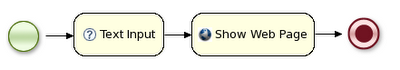
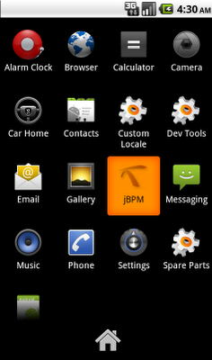
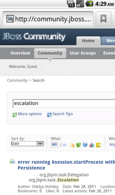

jBPM5 lightweight? Running on Android!
And since we always claim jBPM is such a lightweight engine that you can embed it practically anywhere, I decided to give that a try: run the jBPM5 engine on Android. Some people might be thinking, why would I want to do that? Well, my primary goal was just as a proof of concept. But maybe, if we extend that proof of concept a little more and add more Android tasks, end users without any real development experience might be able to use it do model simple Android applications as well, who knows!
So after downloading the Eclipse tooling and following a hello world example, I decided to create a simple process that first asks the user for some keyword and then uses this keyword to search the jBPM community forum for entries containing that keyword (I know, not rocket science, you don’t really need a workflow engine for that but it’s just a demo example).

After adding the jBPM5 jars to the classpath, I updated my application to start this process when the application is started. I also created two domain-specific services for Android, one for requesting some input from the user (where I then bind this result to a process variable) and one for showing a web page (which shows a URL, which I created based on the input of the user).
And it worked almost[*] out of the box! So this is what it looks like (on the emulator, but it runs nicely on my phone as well). First you start the jBPM application …

The first node in the process will ask you for a keyword you want to search for …
And the last node will show the results of the query on the jBPM community forum in a browser …

I’m pretty sure there are a lot of developers out there that try to play with new technologies like this, so if you’re interested in playing with this and maybe extending this a little, let me know. Imagine we add a few more default services for showing an image, getting some file, getting GPS location, etc. Would be pretty cool if you could create more advanced applications like that.
I’ve uploaded the source code and the jbpm-android.apk so you can give it a try yourself !

{kind=link}
{kind=link}
{kind=link}
{kind=link}